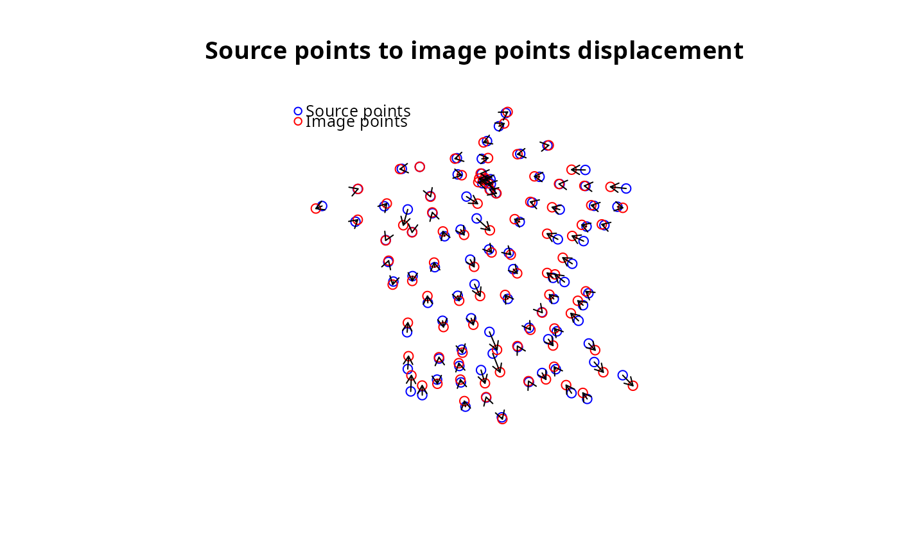

plot unipolar_displacement_result object
Source:R/plot.unipolar_displacement_result.R
plot.unipolar_displacement_result.RdPlot the result of dc_move_from_reference_point
Usage
# S3 method for class 'unipolar_displacement_result'
plot(x, ...)Arguments
- x
object of class unipolar_displacement_result
- ...
further specifications, see plot for details
Examples
library(sf)
# Read source points
source_pts <- st_read(
dsn = system.file("gpkg/data-prefecture.gpkg", package = "distanamo"),
layer = "prefecture", quiet = TRUE
)
# Read the background layer to deform
background_layer <- st_read(
dsn = system.file("gpkg/data-prefecture.gpkg", package = "distanamo"),
layer = "departement", quiet = TRUE
)
durations_mat <- read.csv(system.file("csv/mat.csv", package = "distanamo"), row.names = 1)
dur <- durations_mat["CAEN", ]
source_pts$durations <- as.double(dur)
ref_point <- subset(source_pts, source_pts$NOM_COM == "CAEN")
other_points <- subset(source_pts, !source_pts$NOM_COM == "CAEN")
# Generate position from durations between the reference point
# and the other points
positioning_result <- dc_move_from_reference_point(
reference_point = ref_point,
other_points = other_points,
duration_col_name = "durations",
factor = 1
)
# Plot result of the positioning step
plot(positioning_result)

# Summary statistics of the positioning step
summary(positioning_result)
#> Summary of the unipolar displacement result:
#> Min displacement: 821.2748 [m]
#> Mean displacement: 17560.79 [m]
#> Max displacement: 58014.19 [m]